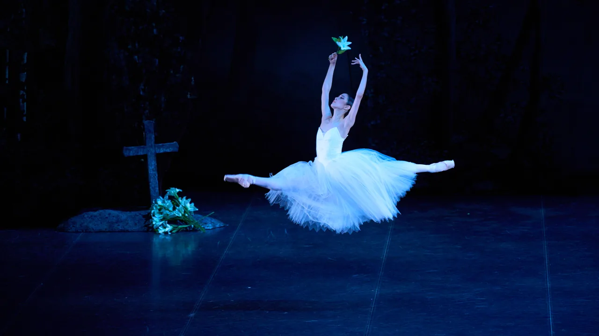
公演本編の
GALLERY — 舞台写真(上演順)
第1部の

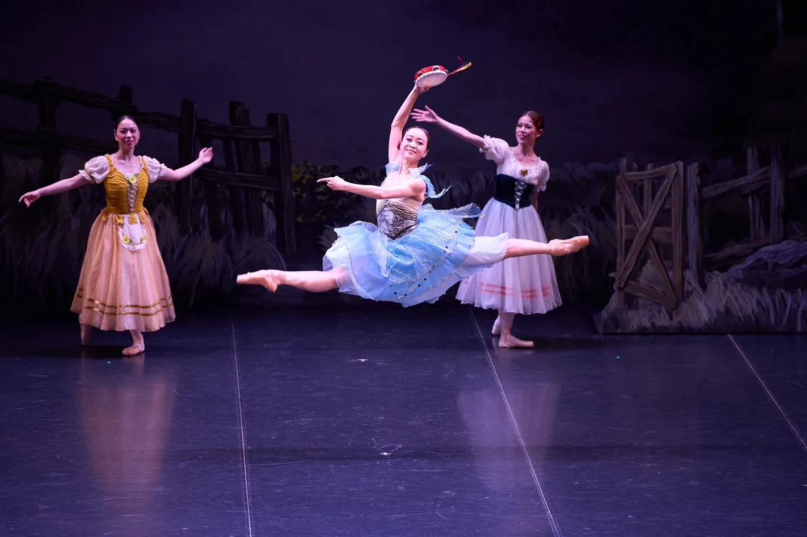

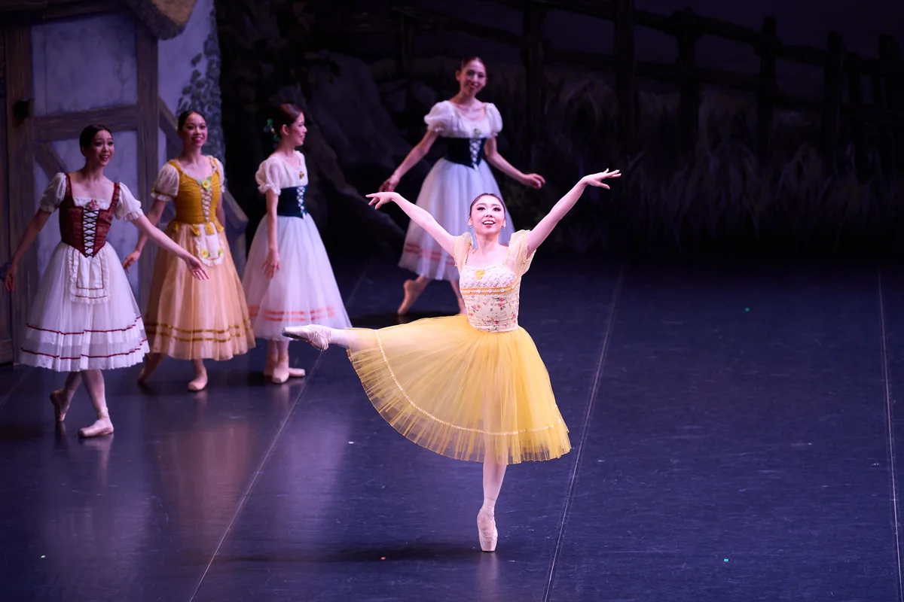

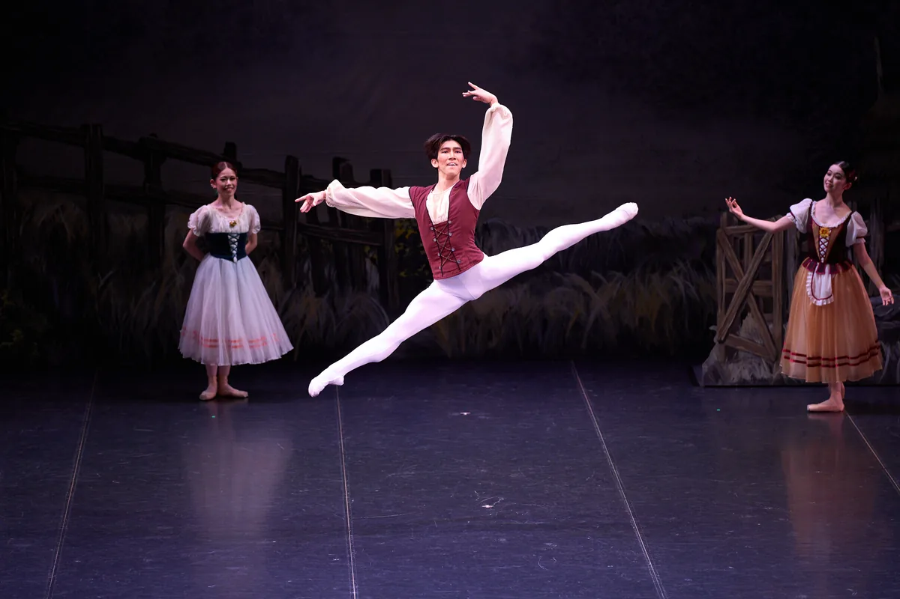

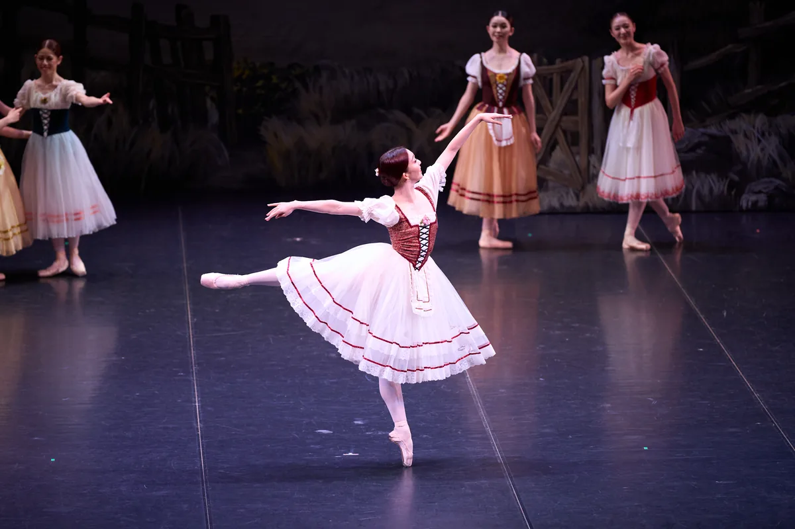

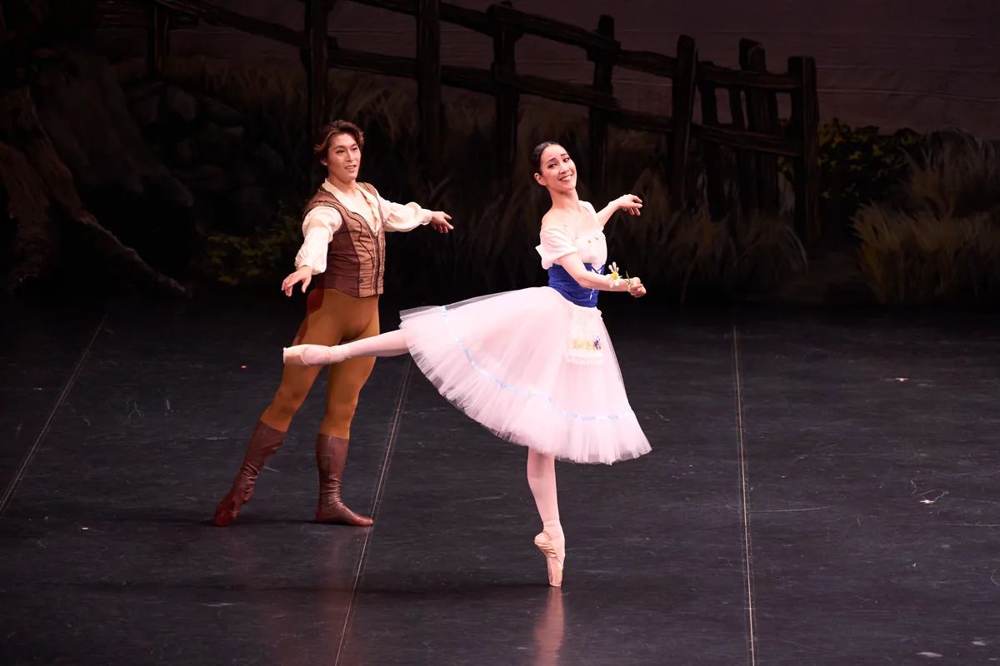


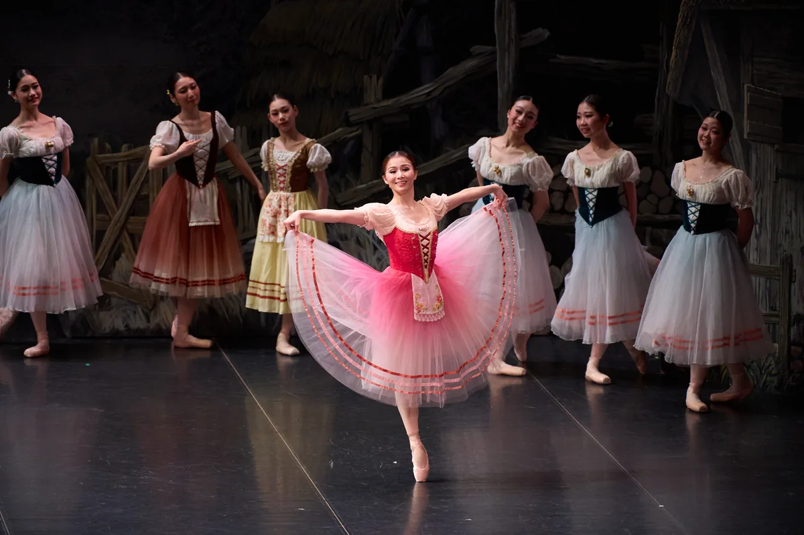

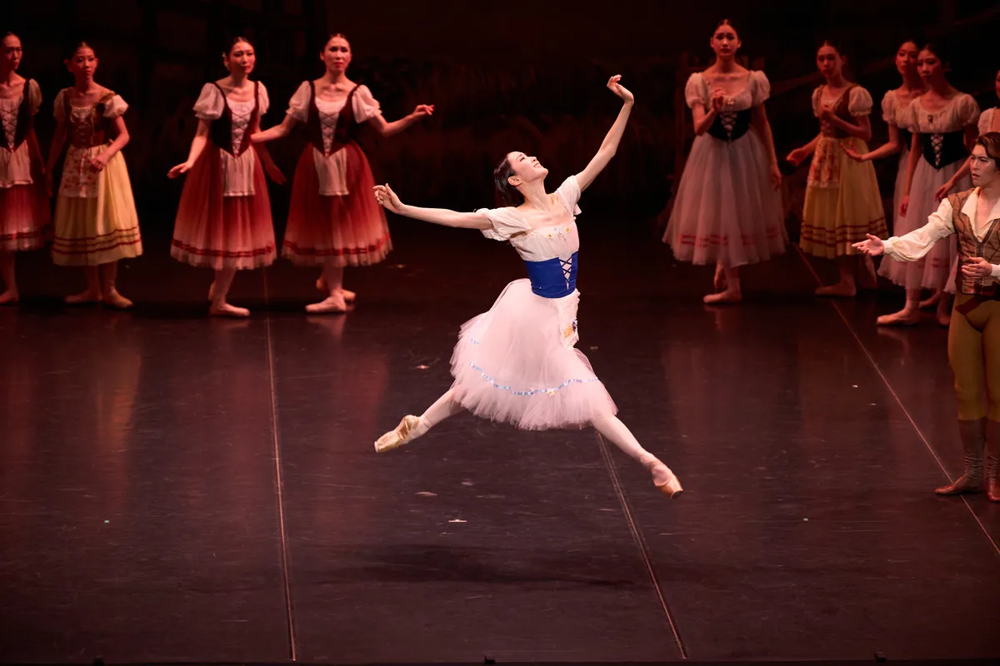

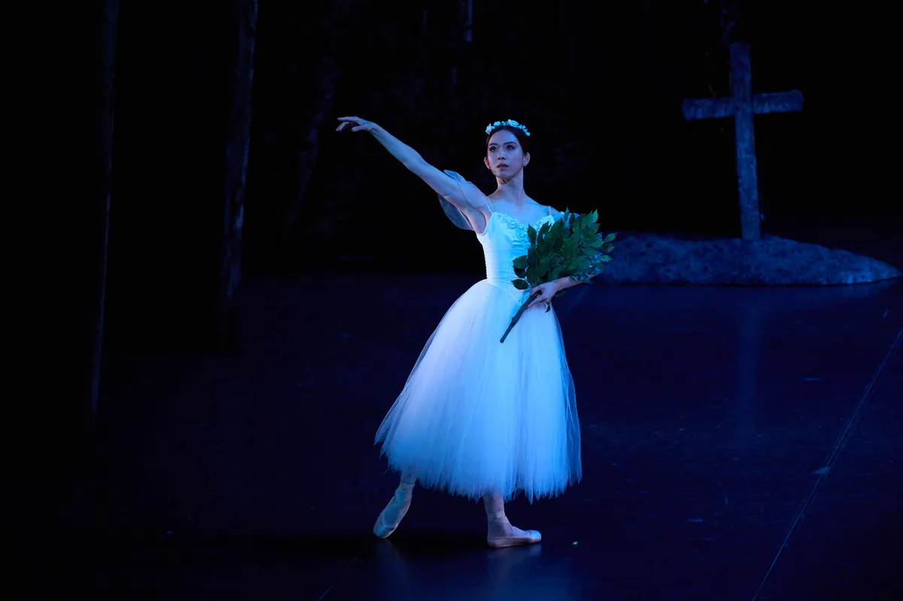


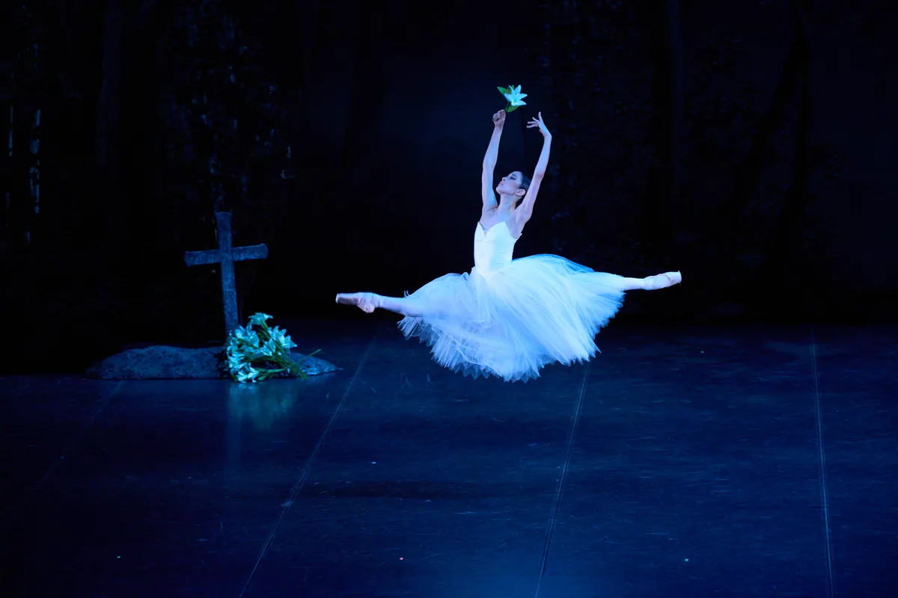

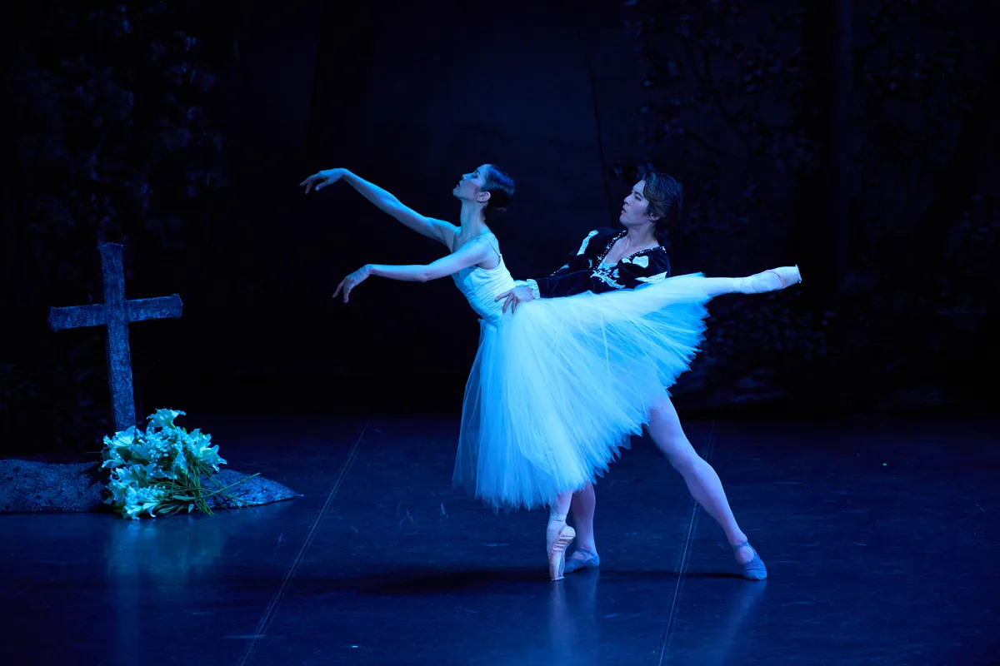

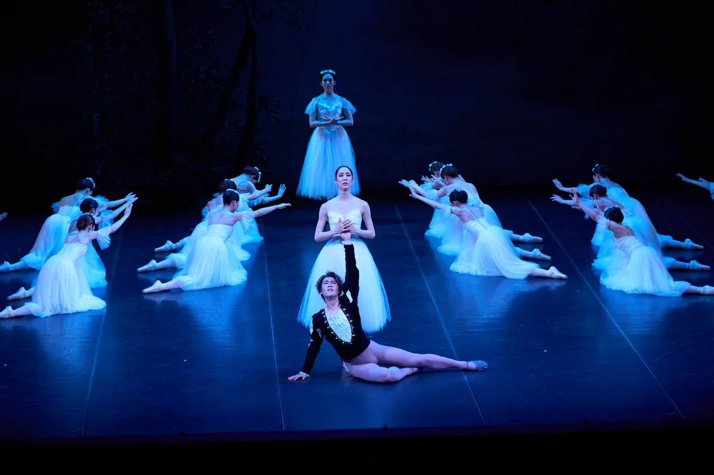

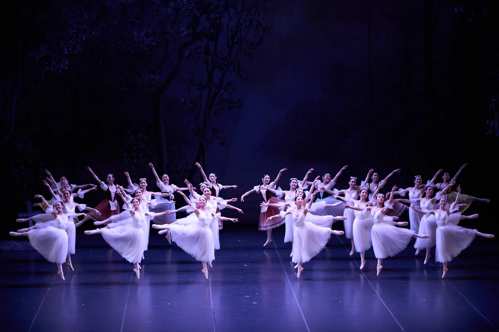
Photo: © FUKUKO IIYAMA
PROGRAM — 構成・配役
2026年7月30日(木)18:30開演、めぐろパーシモンホール 大ホール(東京・目黒)。第1部は
第1部 — コンサート
国内外の
第2部 — ジゼル #shorts(本編)
村娘ジゼルの
- ジゼル ジゼル森田 愛海(エストニア国立バレエ団 プリンシパル)
- ジゼル アルブレヒト福岡 雄大(新国立劇場バレエ団 シーズンゲストプリンシパル)
- ジゼル ミルタ(ウィリの女王)渡辺 与布(アメリカン・バレエ・シアター)
- ジゼル ヒラリオン上中 佑樹(新国立劇場バレエ団 ソリスト)
- ジゼル バチルダ奥野 凜(ルーマニア国立オペラ座劇場バレエ団 プリンシパル)
- ジゼル ジゼルの母浅井 友香
- ジゼル ペザント・パ・ド・ドゥ鈴木 賢陽(チェコ国立バレエ団) / 本田 千晃(ちあこちゃんねる / 公演主宰)
- ジゼル ジゼルの友人山本 怜(新国立劇場バレエ団) / 内藤 亜仁(元 トルコ国立イスタンブールオペラバレエ団 プリンシパル) / 中野 伶美(元 シビウ劇場バレエ団) / 東野 瑞生(スターダンサーズ・バレエ団)
- ジゼル ドゥ・ウィリ本田 千晃 / 中野 伶美
- ジゼル コール・ド・バレエ(ウィリ / 村人)オーディションで
選ばれた コール・ド・バレエ 26名のみなさん
SERIES
ちあこと愉快な仲間達
2023年から続く、夏の
これまでの
2027年8月4日(水) 18:30開演、練馬文化センター 大ホールで